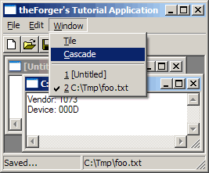
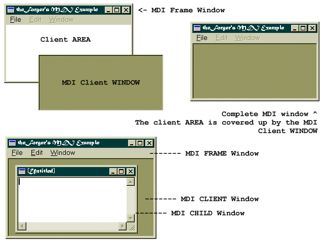

|
Home
Basics
- Getting Started
- A Simple Window
- Handling Messages
- The Message Loop
- Using Resources
- Menus and Icons
- Dialog Boxes
- Modeless Dialogs
- Standard Controls
- Dialog FAQ
Creating a simple application
- Creating controls at runtime
- Files and the common dialogs
- Tool and Status bars
- Multiple Document Interface
Graphics Device Interface
- Bitmaps and Device Contexts
- Transparency
- Timers and Animation
- Text, Fonts and Colours
Tools and Documentation
- References
- Free Visual C++
Appendices
- Solutions to Common Errors
- API vs. MFC
- Resource file notes
|
App Part 4: Multiple Document Interface
Example: app_four

MDI Overview
First a bit of background... Every window has a Client Area, this is
where most programs draw images, place controls etc... the Client Area is not
seperate from the window itself, it is simply a smaller specialised region
of it. Sometimes a window can be all client area, and nothing else, sometimes
the client area is smaller to make room for menus, titles, scrollbars, etc...
In MDI terms, your main window is called the Frame, this is probably the
only window you would have in a SDI (Single Document Interface) program.
In MDI there is an additional window, called the MDI Client Window
which is a child of your Frame window.
Unlike the Client Area it is a complete and seperate window all on it's
own, it has a client area of it's own and probably a few pixels for a border.
You never directly handle messages for the MDI Client, it is done by the
pre-defined windows class "MDICLIENT". You can communicate with
and manipulate the MDI Client and the windows it contains through messages.
When it comes to the windows which actually display your document or
whatever your program displays, you send a message to the MDI Client to tell it to create a new
window of the type you've specified. The new window is created as a child of
the MDI Client, not of your Frame window. This new window is an MDI Child.
The MDI Child is a child of the MDI Client, which in turn is a child of the
MDI Frame (Getting dizzy yet?). To make matters worse, the MDI Child will
probably have child windows of its own, for instance the edit control in the
example program for this section.
You are responsable for writing two (or more) Window Procedures. One, just like
always, for your main window(the Frame). And one more for the MDI Child. You may also
have more than one type of Child, in which case, you'll want a seperate window
procedure for each type.
If I've thoroughly confused you now talking about MDI Clients and things, this diagram
may clear things up a little better:

Getting Started with MDI
MDI requires a few subtle changes throughout a program, so please read through this section
carefully... chances are that if your MDI program doesn't work or has strange behaviour
it's because you missed one of the alterations from a regular program.
MDI Client Window
Before we create our MDI window we need to make a change to the default message processing
that goes on in our Window Procedure... since we're creating a Frame window that will
host an MDI Client, we need to change the DefWindowProc() call to DefFrameProc() which adds
specialized message handling for Frame Windows,
default:
return DefFrameProc(hwnd, g_hMDIClient, msg, wParam, lParam);
The next step is to create the MDI Client window itself, as a child of our frame window.
We do this in WM_CREATE as usual...
CLIENTCREATESTRUCT ccs;
ccs.hWindowMenu = GetSubMenu(GetMenu(hwnd), 2);
ccs.idFirstChild = ID_MDI_FIRSTCHILD;
g_hMDIClient = CreateWindowEx(WS_EX_CLIENTEDGE, "mdiclient", NULL,
WS_CHILD | WS_CLIPCHILDREN | WS_VSCROLL | WS_HSCROLL | WS_VISIBLE,
CW_USEDEFAULT, CW_USEDEFAULT, CW_USEDEFAULT, CW_USEDEFAULT,
hwnd, (HMENU)IDC_MAIN_MDI, GetModuleHandle(NULL), (LPVOID)&ccs);
The menu handle is the handle to the popup menu that the MDI client will add items to
representing each window that is created, allowing the user to select the window they want
to activate from the menu, we'll add functionality shortly to handle this case. In this example
it's the 3rd popup (index 2) since I've added Edit and Window to the menu after File.
ccs.idFirstChild is a number to use as the first ID for the items
the Client adds to the Window menu... you want this to be easily
distinguishable from your own menu identifiers so you can handle your menu commands
and pass the Window menu commands to DefFrameProc() for processing. In the
example I specify an identifier defined as 50000, high enough that I know none
of my menu command id's will be above it.
Now to get this menu to work properly we need to add some special handling to our
WM_COMMAND handler:
case WM_COMMAND:
switch(LOWORD(wParam))
{
case ID_FILE_EXIT:
PostMessage(hwnd, WM_CLOSE, 0, 0);
break;
// ... handle other regular IDs ...
// Handle MDI Window commands
default:
{
if(LOWORD(wParam) >= ID_MDI_FIRSTCHILD)
{
DefFrameProc(hwnd, g_hMDIClient, msg, wParam, lParam);
}
else
{
HWND hChild = (HWND)SendMessage(g_hMDIClient, WM_MDIGETACTIVE,0,0);
if(hChild)
{
SendMessage(hChild, WM_COMMAND, wParam, lParam);
}
}
}
}
break;
I've added a default: case which will catch all commands that I didn't process
directly and do a check to see if the value is greater than or equal to ID_MDI_FIRSTCHILD.
If it is, then the user has clicked on one of the Window menu items and we send
the message on to DefFrameProc() for processing.
If it isn't one of the Window
IDs then I get the handle to the active child window and forward the message
to it for processing. This allows you to delegate responsibility to the Child
windows for performing certain actions, and allows different child windows
to handle commands in different ways if so desired. In the example I only
handle commands that are global to the program in the Frame window procedure,
and send the commands which affect a certain document or child window on to the
child window itself for processsing.
Since we're building on the last example, the code to size the MDI client is the same as
the code to resize the edit control in the last example, that takes into account the size
and position of the tool and status bars so they don't overlap the MDI client window.
We also need to modify our message loop a little...
while(GetMessage(&Msg, NULL, 0, 0))
{
if (!TranslateMDISysAccel(g_hMDIClient, &Msg))
{
TranslateMessage(&Msg);
DispatchMessage(&Msg);
}
}
We've added an extra step (TranslateMDISysAccel()), that checks for the
pre-defined accelerator keys, Ctrl+F6 which swtiches to the next window, Ctrl+F4 which closes the Child
and so on. If you don't add in this check you will annoy your users by not
providing the standard behaviour they've gotten used to, or you'll have to
implement it manually.
Child Window Class
In addition to the main window of the program (the Frame window) we need to create new
window classes for each type of child window we want. For example you might have one
to display text, and one to display a picture or graph. In this example we'll only
be creating one child type, which will be just like the editor program in the previous
examples.
BOOL SetUpMDIChildWindowClass(HINSTANCE hInstance)
{
WNDCLASSEX wc;
wc.cbSize = sizeof(WNDCLASSEX);
wc.style = CS_HREDRAW | CS_VREDRAW;
wc.lpfnWndProc = MDIChildWndProc;
wc.cbClsExtra = 0;
wc.cbWndExtra = 0;
wc.hInstance = hInstance;
wc.hIcon = LoadIcon(NULL, IDI_APPLICATION);
wc.hCursor = LoadCursor(NULL, IDC_ARROW);
wc.hbrBackground = (HBRUSH)(COLOR_3DFACE+1);
wc.lpszMenuName = NULL;
wc.lpszClassName = g_szChildClassName;
wc.hIconSm = LoadIcon(NULL, IDI_APPLICATION);
if(!RegisterClassEx(&wc))
{
MessageBox(0, "Could Not Register Child Window", "Oh Oh...",
MB_ICONEXCLAMATION | MB_OK);
return FALSE;
}
else
return TRUE;
}
This is basically identical to registering our regular frame window, there are no particularly
special flags here for use with MDI. We've set the menu as NULL, and the window procedure
to point to the child window procedure which we will write next.
MDI Child Procedure
The window procecure for an MDI child is much like any other with a few small exceptions.
First of all, default messages are passed to DefMDIChildProc() instead of
DefWindowProc().
In this particular case, we also want to disable the Edit and Window menu's when they
aren't needed (just because it's a nice thing to do), so we handle WM_MDIACTIVEATE
and enable or disable them depending on if our window is getting activated or not. If you
have multiple types of child window, this is where you could put code to completely change the
menu or toolbar or make alterations to other aspects of the program to reflect the actions
and commands that are specific to the type of window being activated.
To be even more complete, we can disable the Close and Save File menu items as well, since they aren't
going to be any good with no windows to act on. I've disabled all these items by default
in the resource so that I don't need to add extra code to do it when the application first starts
up.
LRESULT CALLBACK MDIChildWndProc(HWND hwnd, UINT msg, WPARAM wParam, LPARAM lParam)
{
switch(msg)
{
case WM_CREATE:
{
HFONT hfDefault;
HWND hEdit;
// Create Edit Control
hEdit = CreateWindowEx(WS_EX_CLIENTEDGE, "EDIT", "",
WS_CHILD | WS_VISIBLE | WS_VSCROLL | WS_HSCROLL | ES_MULTILINE | ES_AUTOVSCROLL | ES_AUTOHSCROLL,
0, 0, 100, 100, hwnd, (HMENU)IDC_CHILD_EDIT, GetModuleHandle(NULL), NULL);
if(hEdit == NULL)
MessageBox(hwnd, "Could not create edit box.", "Error", MB_OK | MB_ICONERROR);
hfDefault = GetStockObject(DEFAULT_GUI_FONT);
SendMessage(hEdit, WM_SETFONT, (WPARAM)hfDefault, MAKELPARAM(FALSE, 0));
}
break;
case WM_MDIACTIVATE:
{
HMENU hMenu, hFileMenu;
UINT EnableFlag;
hMenu = GetMenu(g_hMainWindow);
if(hwnd == (HWND)lParam)
{ //being activated, enable the menus
EnableFlag = MF_ENABLED;
}
else
{ //being de-activated, gray the menus
EnableFlag = MF_GRAYED;
}
EnableMenuItem(hMenu, 1, MF_BYPOSITION | EnableFlag);
EnableMenuItem(hMenu, 2, MF_BYPOSITION | EnableFlag);
hFileMenu = GetSubMenu(hMenu, 0);
EnableMenuItem(hFileMenu, ID_FILE_SAVEAS, MF_BYCOMMAND | EnableFlag);
EnableMenuItem(hFileMenu, ID_FILE_CLOSE, MF_BYCOMMAND | EnableFlag);
EnableMenuItem(hFileMenu, ID_FILE_CLOSEALL, MF_BYCOMMAND | EnableFlag);
DrawMenuBar(g_hMainWindow);
}
break;
case WM_COMMAND:
switch(LOWORD(wParam))
{
case ID_FILE_OPEN:
DoFileOpen(hwnd);
break;
case ID_FILE_SAVEAS:
DoFileSave(hwnd);
break;
case ID_EDIT_CUT:
SendDlgItemMessage(hwnd, IDC_CHILD_EDIT, WM_CUT, 0, 0);
break;
case ID_EDIT_COPY:
SendDlgItemMessage(hwnd, IDC_CHILD_EDIT, WM_COPY, 0, 0);
break;
case ID_EDIT_PASTE:
SendDlgItemMessage(hwnd, IDC_CHILD_EDIT, WM_PASTE, 0, 0);
break;
}
break;
case WM_SIZE:
{
HWND hEdit;
RECT rcClient;
// Calculate remaining height and size edit
GetClientRect(hwnd, &rcClient);
hEdit = GetDlgItem(hwnd, IDC_CHILD_EDIT);
SetWindowPos(hEdit, NULL, 0, 0, rcClient.right, rcClient.bottom, SWP_NOZORDER);
}
return DefMDIChildProc(hwnd, msg, wParam, lParam);
default:
return DefMDIChildProc(hwnd, msg, wParam, lParam);
}
return 0;
}
I've implemented the File Open and Save as commands, the DoFileOpen()
and DoFileSave() are nearly the same as in previous examples with the
ID of the edit control changed, and additionally setting the title of the MDI Child
to the filename.
The Edit commands are easy, because the edit control has built in support for them,
we just tell it what to do.
Remember I mentioned that there are little things you need to remember or your application will
behave strangely? Note that I've called DefMDIChildProc() at the end of
WM_SIZE, this is important otherwise the system wont' have a chance to do
it's own processing on the message. You can look up DefMDIChildProc() in MSDN
for a list of the messages that it processes, and always be sure to pass them to it.
Creating and Destroying Windows
MDI Child windows are not created directly, isntead we send a WM_MDICREATE message
to the client window telling it what kind of window we want by setting the members of an
MDICREATESTRUCT. You can look up the various members of this struct in your
documentation, they are fairly straight forward. The return value from the
WM_MDICREATE message is the handle to the newly created window.
HWND CreateNewMDIChild(HWND hMDIClient)
{
MDICREATESTRUCT mcs;
HWND hChild;
mcs.szTitle = "[Untitled]";
mcs.szClass = g_szChildClassName;
mcs.hOwner = GetModuleHandle(NULL);
mcs.x = mcs.cx = CW_USEDEFAULT;
mcs.y = mcs.cy = CW_USEDEFAULT;
mcs.style = MDIS_ALLCHILDSTYLES;
hChild = (HWND)SendMessage(hMDIClient, WM_MDICREATE, 0, (LONG)&mcs);
if(!hChild)
{
MessageBox(hMDIClient, "MDI Child creation failed.", "Oh Oh...",
MB_ICONEXCLAMATION | MB_OK);
}
return hChild;
}
One member of MDICREATESTRUCT that I didn't use that can be quite usefull is
the lParam member. This can be used to send any 32bit value (like a pointer) to
the child you are creating in order to provide it with any custom information you choose.
In the WM_CREATE handler for your child window, the lParam value for
the WM_CREATE
message will point to a CREATESTRUCT. the lpCreateParams member of that structure
will point to the MDICREATESTRUCT you sent along with WM_MDICREATE. So in order
to access the lParam value from the Child window you need to do something like
this in the child window procedure...
case WM_CREATE:
{
CREATESTRUCT* pCreateStruct;
MDICREATESTRUCT* pMDICreateStruct;
pCreateStruct = (CREATESTRUCT*)lParam;
pMDICreateStruct = (MDICREATESTRUCT*)pCreateStruct->lpCreateParams;
/*
pMDICreateStruct now points to the same MDICREATESTRUCT that you
sent along with the WM_MDICREATE message and you can use it
to access the lParam.
*/
}
break;
If you don't want to bother with those two extra pointers you can access the
lParam in one step with
((MDICREATESTRUCT*)((CREATESTRUCT*)lParam)->lpCreateParams)->lParam
Now we can implement the File commands on our menu in our Frame window procedure:
case ID_FILE_NEW:
CreateNewMDIChild(g_hMDIClient);
break;
case ID_FILE_OPEN:
{
HWND hChild = CreateNewMDIChild(g_hMDIClient);
if(hChild)
{
DoFileOpen(hChild);
}
}
break;
case ID_FILE_CLOSE:
{
HWND hChild = (HWND)SendMessage(g_hMDIClient, WM_MDIGETACTIVE,0,0);
if(hChild)
{
SendMessage(hChild, WM_CLOSE, 0, 0);
}
}
break;
We can also provide some default MDI processing of window arrangment for our Window menu,
since MDI supports this itself it's not much work.
case ID_WINDOW_TILE:
SendMessage(g_hMDIClient, WM_MDITILE, 0, 0);
break;
case ID_WINDOW_CASCADE:
SendMessage(g_hMDIClient, WM_MDICASCADE, 0, 0);
break;
|